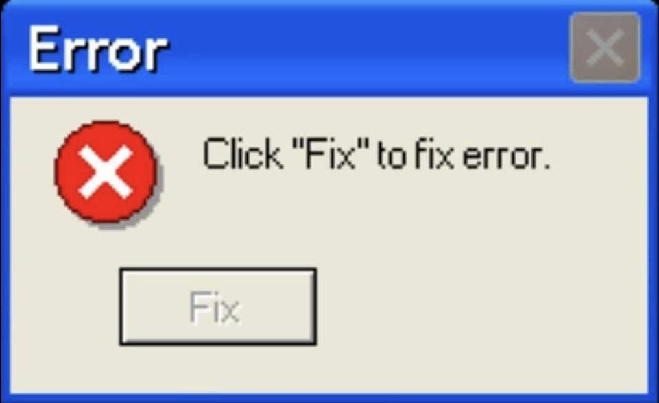
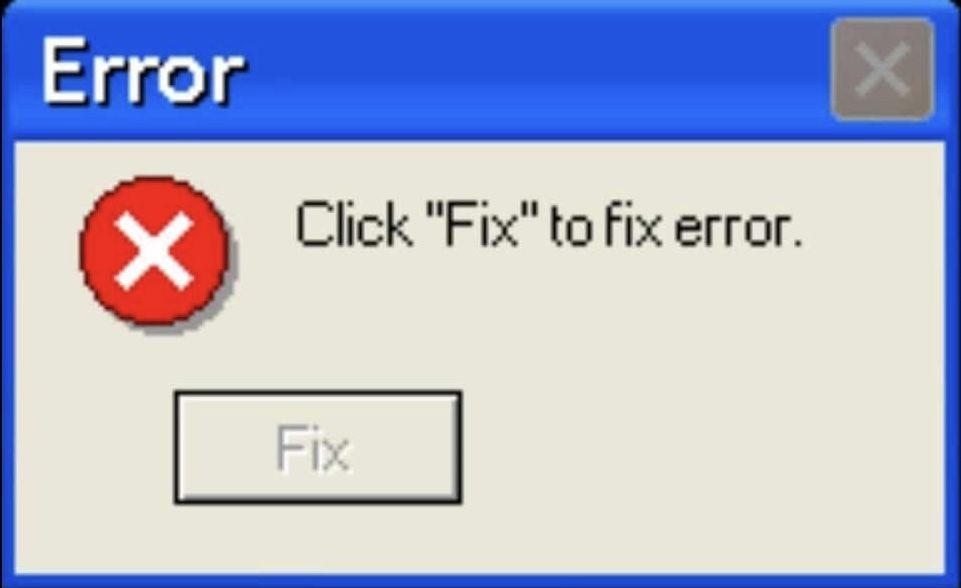
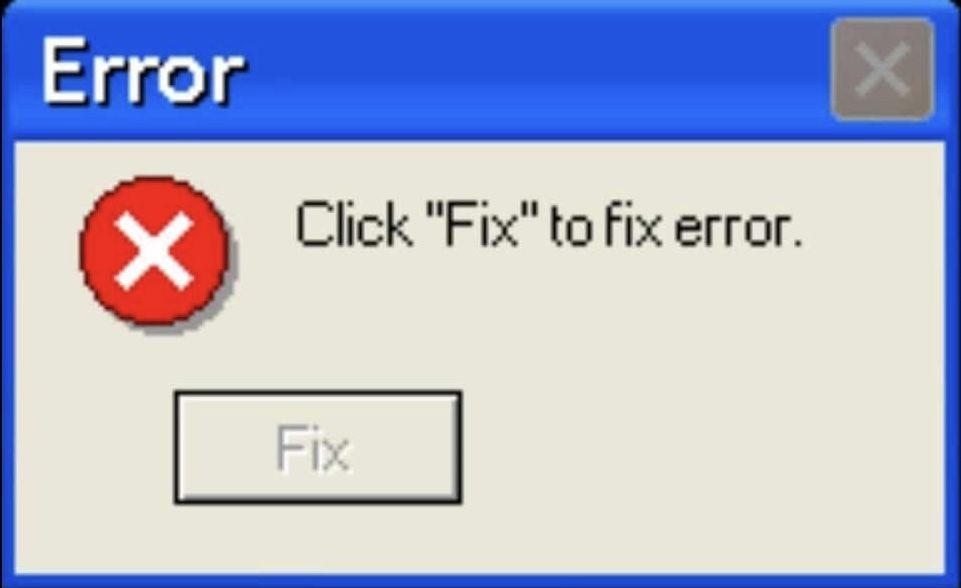

.jpg)
 



.jpg)
Сегодня мы наблюдаем не победу партии, а торжество свободы, символизирующее как конец, так и начало, означающее как обновление, так и изменение. Ибо я поклялся перед вами и Всемогущим Богом той же торжественной клятвой, которую наши предки дали почти столетие и три четверти назад. Мир сейчас совсем другой. Ибо человек держит в своих смертных руках власть уничтожить все формы человеческой бедности и все формы человеческой жизни. И все же те же самые революционные убеждения, за которые боролись наши предки, все еще актуальны во всем мире — вера в то, что права человека исходят не от щедрости государства, а от руки Бога. Мы не смеем сегодня забывать, что мы наследники той первой революции. Пусть в это время и в этом месте разнесется весть, как друзьям, так и врагам, что эстафета передана новому поколению американцев, родившихся в этом столетии, закаленных войной, дисциплинированных суровым и горьким миром, гордых наше древнее наследие - и нежелание стать свидетелем или допустить медленное уничтожение тех прав человека, которым всегда была привержена эта нация и которым мы привержены сегодня дома и во всем мире. Пусть каждая нация знает, желает ли она нам добра или зла, что мы заплатим любую цену, вынесем любое бремя, преодолеем любые трудности, поддержим любого друга, выступим против любого врага, чтобы обеспечить выживание и успех свободы. Это мы обещаем - и многое другое. Тем старым союзникам, чье культурное и духовное происхождение мы разделяем, мы клянемся в верности верных друзей. Объединившись, мы мало что можем сделать во множестве совместных предприятий. Разделившись, мы мало что можем сделать, потому что мы не осмелимся встретить мощный вызов в разногласиях и разделиться на части.
Тем новым государствам, которых мы приветствуем в рядах свободных, мы даем слово, что одна форма колониального контроля не исчезнет просто для того, чтобы быть замененной гораздо более железной тиранией. Мы не всегда ожидаем, что они поддержат нашу точку зрения. Но мы всегда будем надеяться найти их решительно поддерживающими свою свободу — и помнить, что в прошлом те, кто по глупости стремился к власти, оседлав тигра, оказались внутри. Тем людям в хижинах и деревнях половины земного шара, которые борются за то, чтобы разорвать оковы массовой нищеты, мы обещаем сделать все возможное, чтобы помочь им помочь себе в течение любого необходимого периода времени — не потому, что это могут делать коммунисты, не потому, что мы ищем их голоса, а потому что это правильно. Если свободное общество не может помочь многим бедным, оно не может спасти и немногих богатых. Нашим братским республикам к югу от нашей границы мы даем особое обещание - превратить наши добрые слова в добрые дела - в новом союзе во имя прогресса - помочь свободным людям и свободным правительствам сбросить цепи бедности. Но эта мирная революция надежды не может стать добычей враждебных сил. Пусть все наши соседи знают, что мы присоединимся к ним, чтобы противостоять агрессии или подрывной деятельности в любой точке Америки. И пусть всякая другая держава знает, что это полушарие намерено оставаться хозяином своего собственного дома.
Этой всемирной ассамблее суверенных государств, Организации Объединенных Наций, нашей последней надежде в эпоху, когда инструменты войны намного превзошли инструменты мира, мы подтверждаем нашу клятву поддержки, чтобы не допустить, чтобы она превратилась просто в форум для оскорблений. -- чтобы укрепить свой щит от новых и слабых -- и расширить область, в которой может действовать его приказ. Наконец, тем нациям, которые хотят сделать себя нашими противниками, мы предлагаем не обещание, а просьбу: чтобы обе стороны заново начали поиски мира, прежде чем темные силы разрушения, высвобожденные наукой, поглотят все человечество в запланированном или случайном самоуничтожении. . Мы не смеем искушать их слабостью. Ибо только тогда, когда у нас несомненно достаточно оружия, мы можем быть уверены в том, что оно никогда не будет использовано. Но и две великие и могущественные группы наций не могут утешиться нашим нынешним курсом — обе стороны обременены стоимостью современного оружия, обе справедливо встревожены неуклонным распространением смертоносного атома, но обе стремятся изменить это шаткое равновесие ужаса. что остается рука последней войны человечества. Итак, начнем заново, помня с обеих сторон, что учтивость не есть признак слабости, а искренность всегда подлежит доказыванию. Давайте никогда не будем вести переговоры из страха. Но давайте не будем бояться вести переговоры.
Пусть обе стороны исследуют, какие проблемы нас объединяют, вместо того чтобы обсуждать проблемы, которые нас разделяют. Пусть обе стороны впервые формулируют серьезные и четкие предложения по инспектированию и контролю над вооружениями — и поставят абсолютную власть уничтожать другие нации под абсолютный контроль всех наций. Пусть обе стороны стремятся призвать чудеса науки вместо ее ужасов. Давайте вместе исследовать звезды, покорять пустыни, искоренять болезни, открывать глубины океана и поощрять искусство и торговлю. Пусть обе стороны объединятся, чтобы во всех уголках земли следовать повелению Исайи — «разложить тяжкие бремена… (и) отпустить угнетенных на свободу». И если плацдарм сотрудничества может оттеснить джунгли подозрений, пусть обе стороны объединятся в создании нового усилия, не нового баланса сил, а нового мира закона, где сильные справедливы, а слабые защищены и мир сохранен. Все это не будет закончено в первые сто дней. Он не будет завершен ни в первую тысячу дней, ни в жизни этой Администрации, ни даже, возможно, в нашей жизни на этой планете. Но давайте начнем. В ваших руках, мои сограждане, в большей степени, чем в моих, будет зависеть окончательный успех или провал нашего курса. С момента основания этой страны каждое поколение американцев призвано свидетельствовать о своей национальной лояльности. Могилы молодых американцев, откликнувшихся на призыв к служению, окружают земной шар.
Теперь труба снова зовет нас — не как призыв к оружию, хотя оружие нам и нужно, — не как призыв к битве, хотя мы и сражаемся, — но призыв нести бремя долгой сумеречной борьбы, год за годом. и из года в год «радоваться в надежде, терпеть в скорбях» — борьба с общими врагами человека: тиранией, нищетой, болезнями и самой войной. Можем ли мы создать против этих врагов великий и глобальный союз Севера и Юга, Востока и Запада, который сможет обеспечить более плодотворную жизнь для всего человечества? Вы присоединитесь к этим историческим усилиям? В долгой мировой истории лишь нескольким поколениям была отведена роль защитников свободы в час максимальной опасности. Я не уклоняюсь от этой ответственности — я приветствую ее. Я не верю, что кто-либо из нас поменялся бы местами с каким-либо другим народом или каким-либо другим поколением. Энергия, вера, преданность, которые мы привносим в это дело, осветят нашу страну и всех, кто ей служит, и отблеск этого огня действительно может осветить мир. Итак, мои дорогие американцы: не спрашивайте, что ваша страна может сделать для вас, — спросите, что вы можете сделать для своей страны. Мои сограждане мира: спрашивайте не о том, что Америка сделает для вас, а о том, что мы вместе можем сделать для свободы человека. Наконец, независимо от того, являетесь ли вы гражданами Америки или гражданами мира, требуйте от нас здесь таких же высоких стандартов силы и самопожертвования, какие мы просим от вас. С чистой совестью, наша единственная верная награда, с историей, последним судьей наших дел, давайте идти вперед, чтобы вести землю, которую мы любим, прося Его благословения и Его помощи, но зная, что здесь, на земле, Божья работа должна быть нашей собственной.

WARNING! THIS SITE CONTAINS FLASHING LIGHTS!